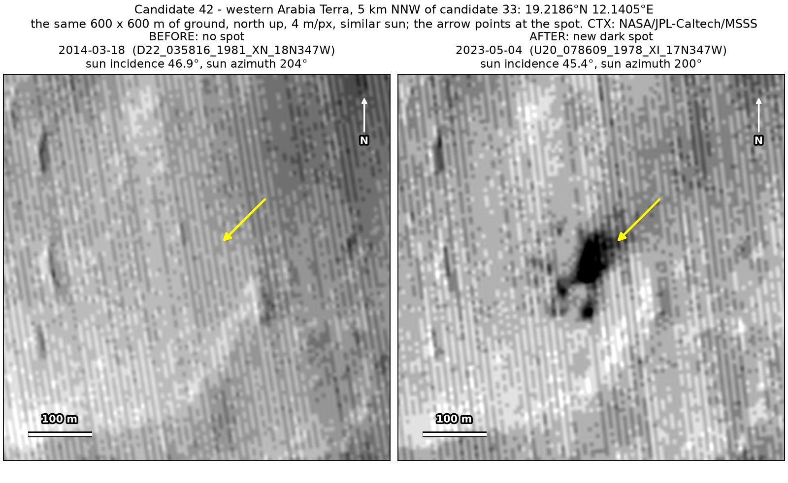
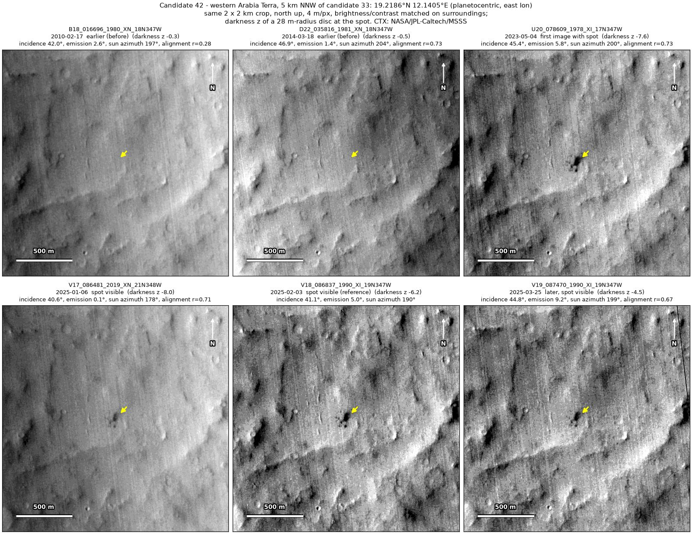
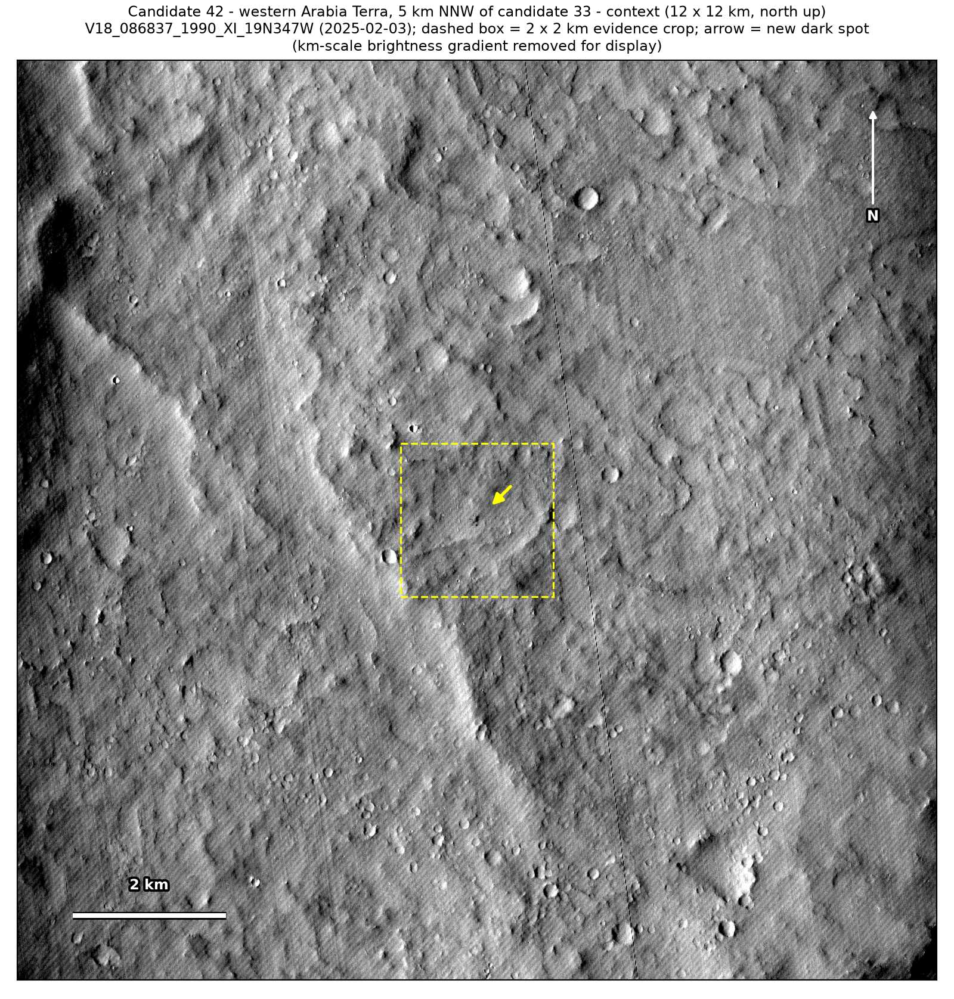
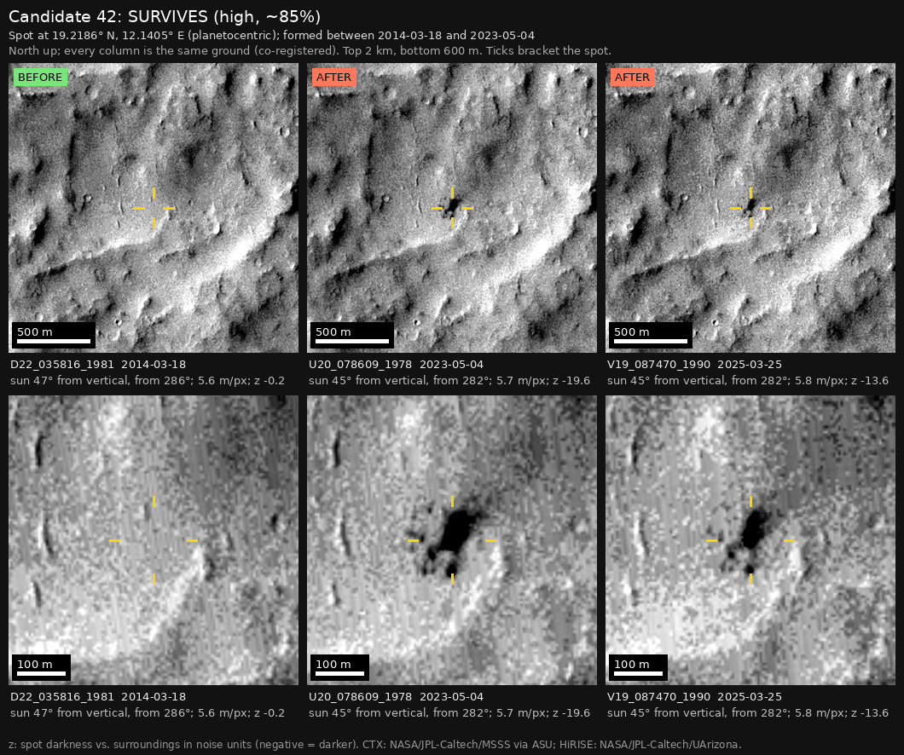

Professor of Mathematics
Paata Ivanisvili
Department of Mathematics, University of California, Irvine

← Possible new impact sites on Mars
Candidate 42: Eroded plains in western Arabia Terra, 5 km north-north-west of candidate 33
Strong · roughly 85%

What changed. A cluster of dark spots, the main one about 50 by 80 m with smaller ones to its south and south-west, appeared on eroded plains in western Arabia Terra between March 2014 and May 2023. It is unchanged in three images from January to March 2025.
Why it may be a new impact. Images from 2010 and 2014 show nothing there, and both would have shown it; the 2014 image was taken under nearly the same sun as the 2023 one, so the cluster is not a shadow. It is seen on four orbits. Arabia Terra is full of dark slope streaks (small dust avalanches), but a cluster of round spots is not a streak, and several dark spots appearing together are the classic mark of a meteoroid that broke up in the air.
- Location
- 19.219° N, 12.141° E
- Absent
- 17 February 2010 and 18 March 2014
- Present
- 4 May 2023, 6 January 2025, 3 February 2025 and 25 March 2025
- Size
- Main spot about 50 × 80 m, with smaller spots to its south and south-west
- Confidence
- Strong candidate; roughly 85% that it is a new impact.
- Nearby
- Candidate 33, 5.2 km to the south-south-east, where HiRISE showed a fresh pit, formed between the same two images of March 2014 and May 2023. The two may be fragments of one meteoroid: crater clusters this wide are rare but known, and on published rates that is two to four times as likely as two unrelated impacts this close together. Neither can be excluded, and neither weakens the case that this is an impact.
- Caveat
- If the two are fragments of one meteoroid, this belongs to candidate 33’s impact rather than being a separate find. It first shows in a 2023 image, so the camera teams may already have it on their unpublished lists; but no HiRISE image covers it (the nearest, candidate 33’s, ends 4 km away), and the teams normally photograph a new impact with HiRISE within months of noticing it. Like every candidate here, it is unconfirmed: see the caveat.


